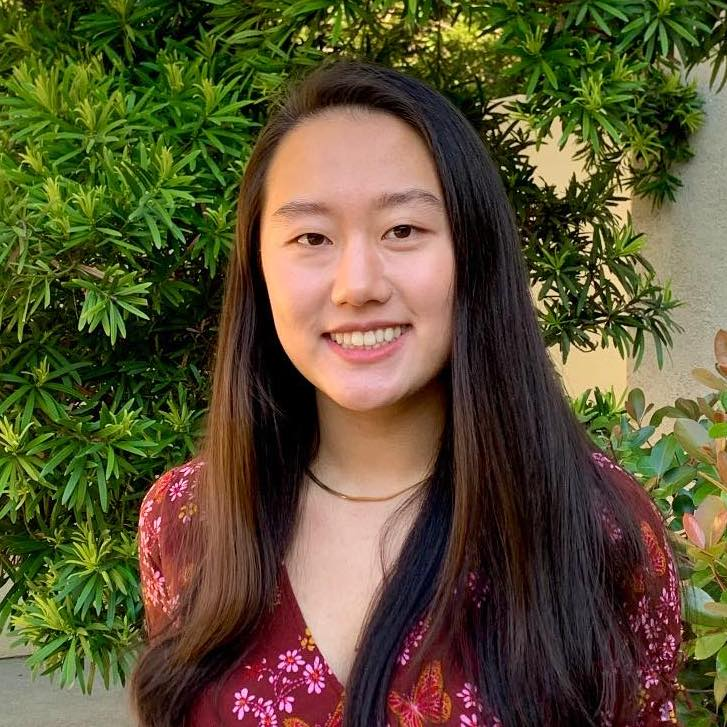

|
Katherine Tian
I'm a recent graduate from Harvard with a B.A. in CS & Statistics and M.S. in CS. I currently work on making language models better calibrated at Stanford's Iris Lab,
advised by Professor Chelsea Finn.
Previously, at Harvard, I worked on medical vision-language models with Professor Pranav Rajpurkar,
algorithms for personal healthcare with Dr. Raaz Dwivedi (now Professor at Cornell Tech)
and Professor Susan Murphy.
I also interned at Google Brain where I worked on TensorFlow.
On campus, I was co-head TA for our machine learning class (CS 181) and TF'ed AI Research Experiences (CS 197).
I also served as Career & Academics Director for Women in CS at Harvard and President of MITxHarvard Women in AI.
Email /
Google Scholar /
Linkedin /
Twitter
|

|
Research (Selected Work)
|
Just Ask for Calibration: Strategies for Eliciting Calibrated Confidence Scores from Language Models Fine-Tuned with Human Feedback
Katherine Tian*, Eric Mitchell*, Allan Zhou, Archit Sharma, Rafael Rafailov, Huaxiu Yao, Chelsea Finn, Christopher D. Manning
In submission, 2023
[arXiv]
|
Multimodal Image-Text Matching Improves Retrieval-based Chest X-Ray Report Generation
Jaehwan Jeong*, Katherine Tian*, Andrew Li, Sina Hartung, Fardad Behzadi, Juan Calle, David Osayande, Michael Pohlen, Subathra Adithan, Pranav Rajpurkar
Medical Imaging with Deep Learning (MIDL), 2023
[arXiv]
|
Counterfactual inference for sequential experimental design
Raaz Dwivedi*, Katherine Tian, Sabina Tomkins, Predrag Klasnja, Susan Murphy, Devavrat Shah
In submission, 2023
[arXiv]
|
Automated clear cell renal carcinoma grade classification with prognostic significance
Katherine Tian*, Christopher A Rubadue, Douglas I Lin, Mitko Veta, Michael E Pyle, Humayun Irshad, Yujing J Heng
PloS one Vol. 14 (10), 2019
[link]
|
Technical Note on Transcription Factor Motif Discovery from Importance Scores (TF-MoDISco)
Avanti Shrikumar*, Katherine Tian, Žiga Avsec, Anna Shcherbina, Abhimanyu Banerjee, Mahfuza Sharmin, Surag Nair, Anshul Kundaje
Preprint, 2018
[arXiv]
|
|
{kind=link}